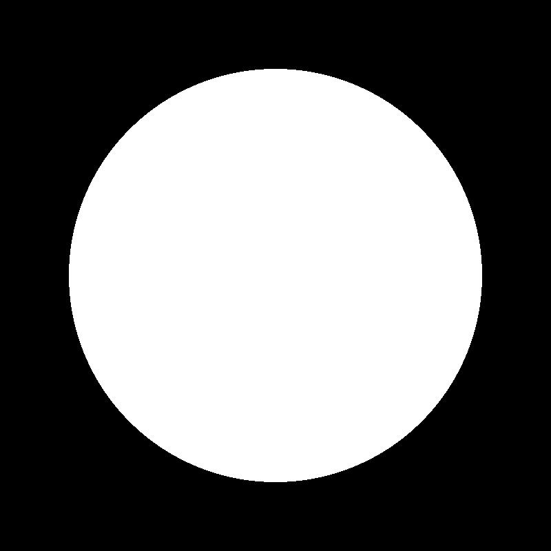
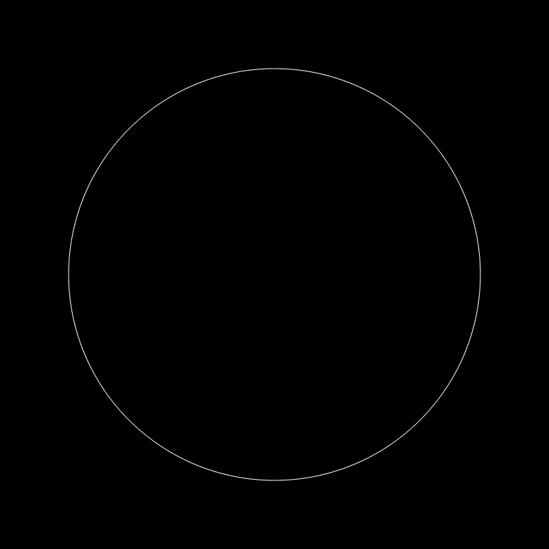

Tutorial: Drawing Circles with OpenGL
 July 2, 2018
July 2, 2018
 Arthur Tran
Arthur Tran


As you probably know, unlike Java's 2D library Swing or JavaFX, OpenGL uses more of a "from scratch" type of
rendering. You would usually have to specify certain vertices that OpenGL would use to connect to form certain
shapes. In this post I'll be focusing more on Java's implementation of OpenGL using the LWJGL but the ideas
and concepts are very similar in C++.
As a forewarning, knowledge of a little trigonometry is required for this and this tutorial will assume that
you know basic Java and OpenGL.
Setup
I'm going to be using my 2D game library I wrote and you can find a piece of example starter code
here
But basically what you need is a loop that updates the screen every so often and clears the screen
between every update.
The Circle
If you've studied trigonometry at all or are familiar with circles and angles, you would know that a circle
is 360 degrees around. So what you can do, is create a for loop that iterates through each angle
of the circle and draws a vertex there. It would look a little something like this:
for(int i = 0; i < 360; i++) {
//code
}
The unit circle tells us that the cosine of an angle gives us the x coordinate of a point that is 1 unit away
from the origin and sine gives us the y coordinate.
However, in Java, the Math.cos() function takes in an angle in radians so we would need to use
Math.toRadians() to do the conversion.
We would then need the coordinate of the origin of the circle which we will call originX and
originY
With this in mind, we can use this formula:
x = (cos(angle) * radius) + originX
and
y = (sin(angle) * radius) + originY
If we then draw a vector from (originX, originY) to (x, y), we will get something that looks like this:
We just need to do this 360 times in the for loop and we will get a circle. Let's see
what this would look like in code.
The Code
int originX = 500;
int originY = 500;
int radius = 100
GL11.glBegin(GL11.GL_Line_Loop); //use GL_Line_Loop for outlined and GL_Line_Strip for a
filled in circle.
for(int i = 0; i < 360; i++) {
int angleToRadians = Math.toRadians(i);
int x = (Math.cos(angleToRadians) * radius) + originX;
int y = (Math.sin(angleToRadians) * radius) + originY;
GL11.glVertex2i(x, y);
}
GL11.glEnd();
Conclusion
And there you go! You should end up with a circle that has a diameter of two times the specified radius.
If you don't feel like writing this out every time you want to draw a circle, feel free to checkout and use
my Java and OpenGL library Arch2DGL. It has methods like renderer.fill(new Ellipse
(0, 0, 100, 100)); which could make your life a lot easier.
You can go ahead and look at the GitHub code here
or download the .jar.